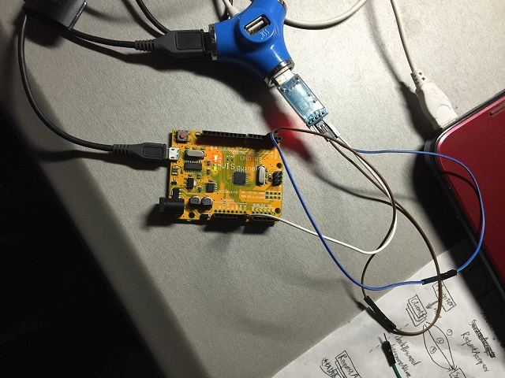
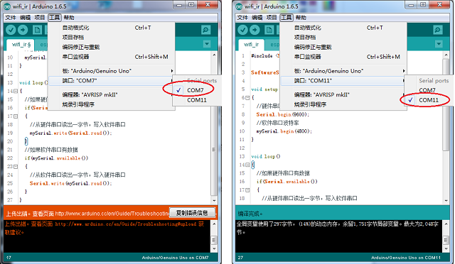
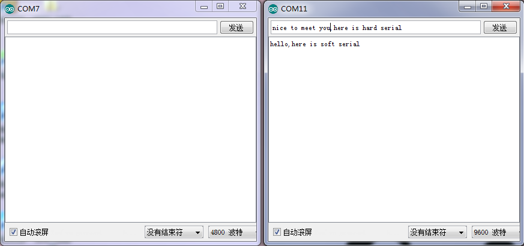

在用Arduino开发一款wifi产品。wifi模块使用的是ESP8266，是一个串口wifi。既然是串口wifi，那么这个模块必然会占用串口。在最终的产品中，占用一个串口也不是什么问题。但是，这在开发调试时真是一个大问题！因为调试本身需要占用一个串口，来进行各种命令的输入和调试信息的输出，而Arduino就只有一个串口，也就是自带的硬件串口，那么就无法控制其他串口设备，比如ESP8266。
其实任何单片机，遇到这个情况，都可以使用软件串口。也就是说，使用软件的方式模拟串口的行为，与其他外设进行串口通信。
那么使用软件串口需要哪些条件呢？
软件串口需要两个引脚，一个发送引脚TX，一个接收引脚RX。先来说说TX。发送的时候，需要模拟串口的时序，比如高电平之后间隔多久来一个低电平，那么就需要延时。延时可以使用delay()忙等，也可以使用定时器来触发内部中断。基本不会有人愿意使用delay()忙等，因为这意味着不能做其他的事情。所以TX需要占用一个定时器与定时器中断。再来说说RX。RX需要监听引脚上的电平变化，同样的，这个可以使用while循环轮询，也可以使用外部中断。基本不会有人愿意使用while轮询吧，因为这意味着不能做其他事情。另外，当有外部中断触发时，需要知道距离上次中断多长时间，所以还需要一个定时器来查看时间。不过这个定时器可以与TX共用。所以RX需要占用一个外部中断。
总结一下，软件串口需要占用一个定时器、定时器中断与一个外部中断，这就是软件串口的使用条件。
好在Arudino上有一个现成的库SoftwareSerial，它可以模拟出一对串口。发送引脚TX可以是任意引脚，而接收引脚RX必须是支出外部中断的。
需要注意的是，软件串口同时只能有一个在工作。
来一段代码代码，演示怎么使用软件串口。
#include <SoftwareSerial.h>
SoftwareSerial mySerial(2,3);//RX=2,TX=3
void setup()
{
//硬件串口波特率
Serial.begin(9600);
//软件串口波特率
mySerial.begin(4800);
}
void loop()
{
//如果硬件串口有数据
if(Serial.available())
{
//从硬件串口读出一字节，写入软件串口
mySerial.write(Serial.read());
}
//如果软件串口有数据
if(mySerial.available())
{
//从软件串口读出一字节，写入硬件串口
Serial.write(mySerial.read());
}
}
很简单的代码。运行之后，往软件串口里写的数据就会出现在硬件串口里，往硬件串口写的数据就会出现在软件串口里。
硬件连接如图：

硬件串口使用USB连接，软件串口的RX（2号引脚）连接USB-TTL的TXD引脚，TX（3号引脚）连接USB-TTL的RXD引脚。
将程序下载入Arduino（注意下载程序必须使用硬件引脚，而此时IDE中有两个端口，不要选错了），然后打开两个串口监视器。这里需要打开两个IDE，分别对应两个端口，我这里是COM7和COM11，然后再分别打开两个串口监视器：

然后会发现，可以相互发消息了！软件串口里输入“hello,here is soft serial”，然后点发送，接着在硬件串口里输入“nice to meet you,here is hard serial”，然后点发送，这个流程如图（左边是软件串口，右边是硬件串口）：


